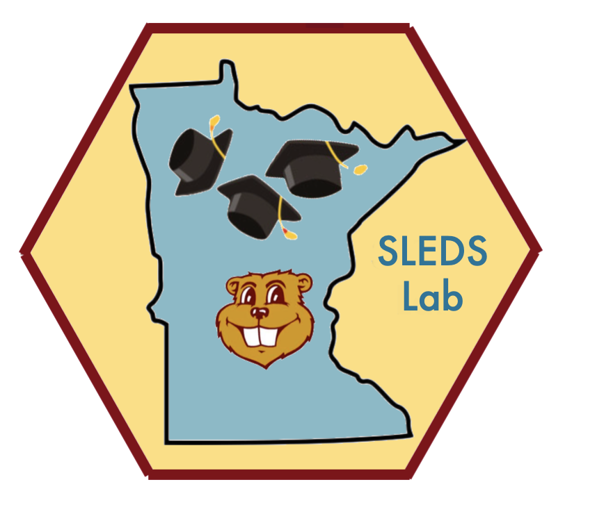

EPSY SLEDS Research Lab
 No, we’re not a gathering place for winter sports enthusiasts living in a relatively cold climate.
We are researchers working with data from the Minnesota Statewide Longitudinal Educational Data System (SLEDS). Available SLEDS data include information gathered by The Minnesota Department of Education (preK–12 data), the Minnesota Office of Higher Education (post-secondary data), and the Minnesota Department of Employment and Economic Development (workforce data). Information is merged through use of a common identifier across systems. The resulting secure longitudinal data set follows children throughout their preK–12 years, into and through their college years, and into the workforce.
We have been working with deidentified individual level data provided to us by the Minnesota group responsible for SLEDS. They have created SLEDS and both maintain it and review external requests to analyze SLEDS data in ways that improve understanding of Minnesota’s educational system and its effectiveness. We are pleased to have received access to SLEDS data for our analyses.
Our initial focus has been on increasing understanding of gender differences in educational trajectories of youth after they finish high school. Nationally, much as been written about the lesser proportion of males who attend post-secondary education. Our work has disaggregated gender differences, adding other variables (e.g., race, social class, citizenship status) and types of post-secondary education where students enroll to provide a more complete picture of differences in college-going behaviors of an entire graduating class from Minnesota’s public high schools. We also have begun exploring work experiences of youth attending (full time and part time) and not attending college.
Lab Members
 Dr. Andrew Zieffler, Teaching Professor
Dr. Andrew Zieffler, Teaching Professor
Dr. Geoffrey Maruyama, Professor Emeritus
Marisa Peczuh, Doctoral student
Tai Do, Doctoral candidate
Shelby Weisen, Doctoral student
We are grateful for guidance we have received from staff at the Minnesota Office of Higher Education, in particular Meredith Fergus and Nora Morris. They have been valuable partners in our work.